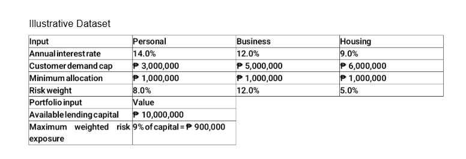
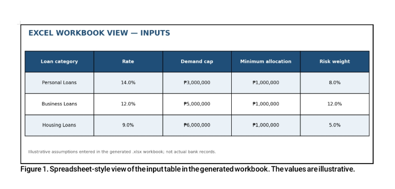
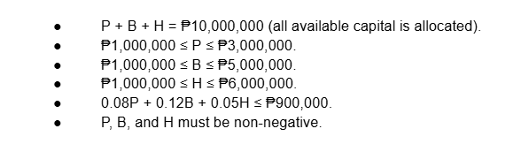
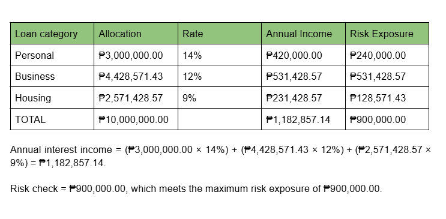
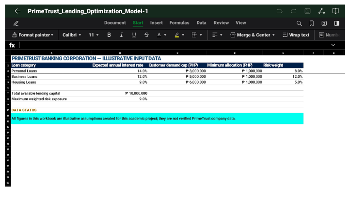
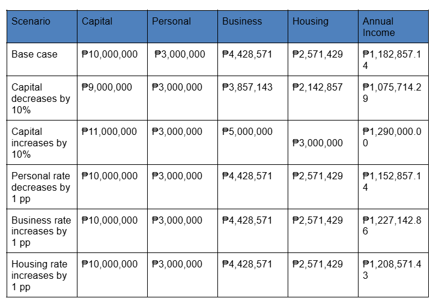
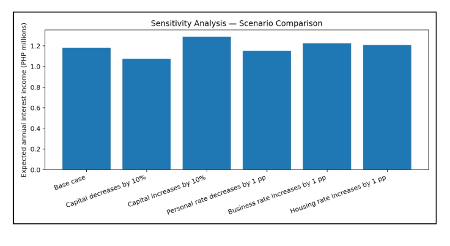

PrimeTrust Banking Corporation
This project focuses on determining the optimal allocation of lending funds among different loan categories, such as personal loans, and housing loans, at PrimeTrust Banking Corporation. It aims to maximize the bank's expected interest income while considering limited lending capital, loan demand, and financial constraints.
The problem
A banking institution faces challenges in allocating its limited lending funds among different loan categories while maximizing interest income and managing financial risks. The bank needs to determine the optimal amount of funds to allocate to personal loans, business loans, and housing loans while considering budget limitations, lending policies, and loan requirements.
The data

- Total available funds for lending.
- Interest rates for different loan categories.
- Maximum and minimum loan allocation limits.
- Loan demand from customers.
- Risk limitations for each loan category.
- Expected interest income per loan category.
My process
- Data preparation in Excel
- Linear programming model development
- Optimization Using Excel Solver
- Optimized Allocation and Computation
- Data visualization
- Sensitivity Analysis

The Inputs worksheet stores each loan category's annual interest rate, demand cap, minimum allocation, and risk weight. Portfolio-level assumptions are stored separately. The Optimization Model worksheet links to these inputs so assumptions can be updated in one place.
Decision variables: P = personal-loan allocation, B = business-loan allocation, and H = housing-loan allocation, all measured in PHP.
Objective: Maximize Z = 0.14P + 0.12B + 0.09H.
Subject to:

The objective and constraints are linear, so Simplex LP is an appropriate solving method.
The workbook's Optimization Model sheet contains the decision cells, annual income formulas, risk calculations, and constraint totals.


Expected annual interest income across scenarios.


A 10% decrease in capital reduces modeled income to ₱1,075,714.29. A 10% increase raises it to ₱1,290,000.00. A one-percentage-point increase in the business-loan rate raises modeled income to ₱1,227,142.86.
Key findings
- Personal loans reach their ₱3,000,000 demand cap because they have the highest assumed rate.
- Business loans receive approximately ₱4,428,571.43 and housing loans receive approximately ₱2,571,428.57.
- Expected annual interest income is approximately ₱1,182,857.14.
- Weighted risk exposure reaches the ₱900,000 ceiling in the base case.
- Changes in capital and interest rates affect modeled income and may change the optimal allocation.
Result and impact
Under the illustrative assumptions, the model allocates ₱3.00 million to personal loans, ₱4.43 million to business loans, and ₱2.57 million to housing loans. It uses the full ₱10 million capital, respects category demand and minimums, and meets the risk ceiling. Expected annual interest income is approximately ₱1.183 million.
The analysis provides managemnet with a data-driven basis for lending decisions, helping improve fund allocation, evaluate financial changes, and maximize potential interest income while considering lending restricions.